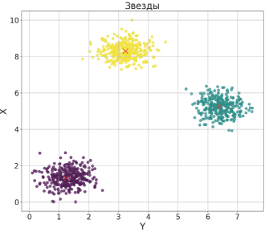
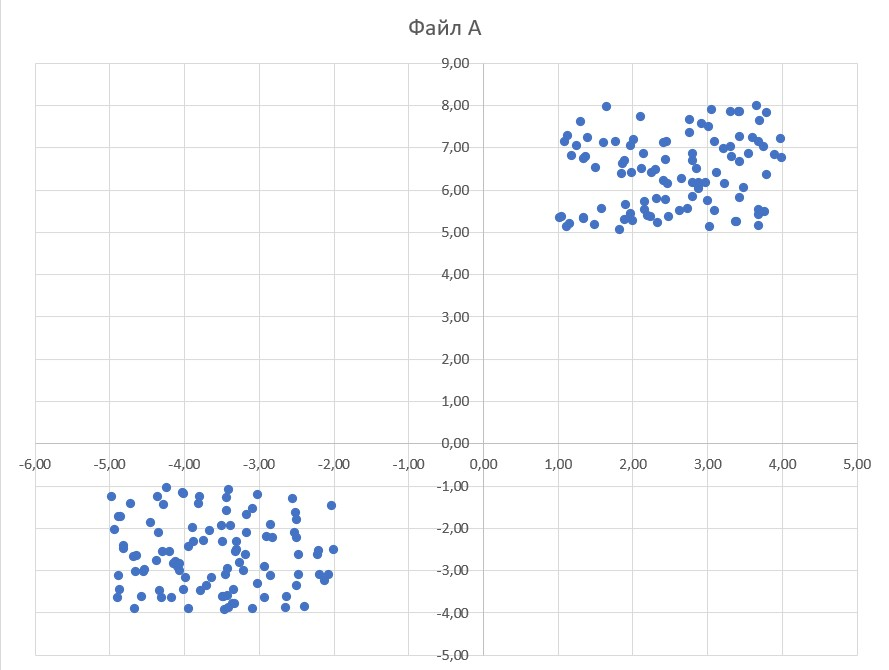
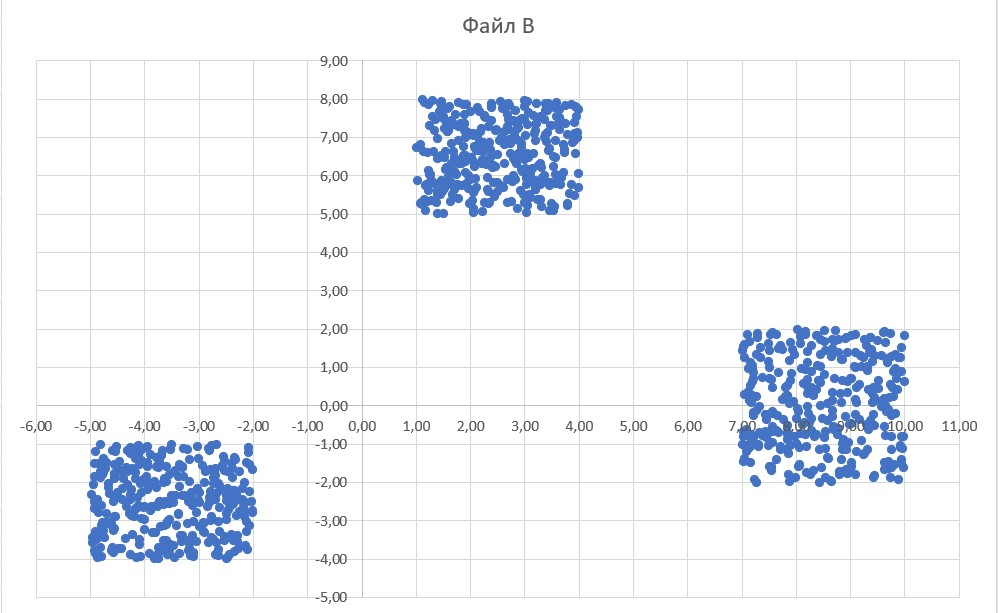

Решение кодом
from itertools import *
s = '457 46 567 12 136 235 13'.split() # у 1 связи с 457, у 2 с 46 и т.д.
v = 'FE EC CA AB BD DF FG DG GC'.split() # по графику есть связи FE, EC и т.д.
print(*range(1, 8))
for p in permutations('ABCDEFG'):
if all(str(p.index(b) + 1) in s[p.index(a)] for a, b in v):
print(*p)
В первой строке перечисляем все соединения из таблицы, во второй все возможные соединения по графику.
Объяснение
Вспомогательные цифры для сопоставления с графом:
print(*range(1,8))
# 1 2 3 4 5 6 7
for p in permutations('ABCDEFG')
Выдает:
A B C D E F G
A B C D E G F
A B C D F E G
A B C D F G E
A B C D G E F
A B C D G F E
A B C E D F G
A B C E D G F
A B C E F D G
A B C E F G D
for a, b in v
Расщепляет каждое соединение в массиве v на буквы:
print(v)
# ['FG', 'GE', 'ED', 'FD', 'DB', 'BA', 'AC', 'CE', 'BC']
for a, b in v: print(a, b)
# F G
# G E
# E D
# F D
# D B
# B A
# A C
# C E
# B C
Возьмём для примера соединение 'EF' и перестановку 'ABCDEFG', где a = 'E', b = 'F':
s[p.index(a)]
Здесь мы ищем среди соединений в таблице колонку соединений номера, равного номеру 'E' в перестановке - это номер 5. То есть мы предполагаем, что колонка 5 - 'E'.
str(p.index(b) + 1)
Здесь мы преобразовываем номер 'F' в перестановке в номер столбика таблицы (тк. мы считаем с единицы, а не нуля, +1)
И если такое число там есть, например:
# str(p.index(b) + 1), p = 'ABCDEFG', b = 'F'
# '5'
# s[p.index(a)], a = 'E'
# s[4]
s = '457 46 567 12 136 235 13'.split()
# '136'
print('5' in '136')
# False
Так перебирается каждая перестановка.
Если хоть одно выражение равно False, то all() выдаст False и будет рассматриваться другая переставновка.
Шаблон на одну функцию
Логическая функция F задаётся выражением:
(х ∧ ¬ y) ∨ (x ≡ z) ∨ w,
Ниже представлен фрагмент таблицы истинности функции
F. Определите, какому столбцу таблицы истинности функции
F соответствует каждая переменная
w,
x,
y,
z.
Укажите, какому столбцу соответствует каждая из переменных.
from itertools import product, permutations
def f(x,y,z,w):
return (x and (not y)) or (x == z) or w
for x1, x2, x3, x4 in product([0,1], repeat=4):
t=(
(0,0,x1,1,0),
(0,x2,1,x3,0),
(x4,1,1,0,0)
)
if len(t) == len(set(t)):
for p in permutations('xyzw', r=4):
if all(f(**dict(zip(p, line))) == line[-1] for line in t):
print(*p)
Для второй функции просто добавьте еще одно if высказывание после первого:
...
if all(f1(**dict(zip(p, line))) == line[-1] for line in t):
if all(f2(**dict(zip(p, line))) == line[-1] for line in t):
print(*p)
База номера 6
from turtle import *
screensize(3000, 3000)
tracer(0)
m = 20 # <-- масштаб
left(90)
# задание исполнителю
pu()
for x in range(-60, 60):
for y in range(-60,60):
goto(x * m, y * m)
dot(5)
done()
Исполнитель Черепаха
Исполнитель Черепаха действует на плоскости с декартовой системой координат. В начальный момент Черепаха находится в начале координат, её голова направлена вдоль положительного направления оси ординат, хвост опущен.
Запись Повтори k [Команда1 Команда2 … КомандаS] означает, что последовательность из S команд повторится k раз.
Черепахе был дан для исполнения следующий алгоритм: Повтори 7 [Вперёд 10 Направо 120].
Определите, сколько точек с целочисленными координатами будут находиться внутри области, ограниченной линией, заданной данным алгоритмом. Точки на линии учитывать не следует.
from turtle import *
screensize(3000, 3000)
tracer(0)
m = 40
left(90)
for _ in range(7):
fd(10 * m)
rt(120)
pu()
for x in range(-60, 60):
for y in range(-60, 60):
goto(x * m, y * m)
dot(5)
done()
Изменяйте m для изменения масштаба картинки
Исполнитель Цапля
Исполнитель Цапля действует на плоскости с декартовой системой координат. В начальный момент Цапля находится в начале координат, её клюв направлен вдоль положительного направления оси ординат, клюв опущен.
Цапле был дан для исполнения следующий алгоритм:
Повтори 5 [Дуга 5, 0, 5, 180 Дуга 5, 5, 0, 180 Дуга 5, 0, -5, 180 Дуга 5, -5, 0, 180].
Определите, сколько точек с целочисленными координатами будут находиться внутри области, ограниченной линией, заданной данным алгоритмом. Точки на линии учитывать не следует.
from turtle import *
screensize(3000, 3000)
tracer(0)
m = 40
left(90)
for _ in range(5):
circle(5 * m, 180)
rt(90)
circle(5 * m, 180)
rt(90)
circle(5 * m, 180)
rt(90)
circle(5 * m, 180)
rt(90)
pu()
for x in range(-60, 60):
for y in range(-60, 60):
goto(x * m, y * m)
dot(5)
done()
От функции Дуга 5, 0, 5, 180 нас интересует только первое и последнее числа.
Слова с повторениями
Все пятибуквенные слове, в составе которых могут быть только русские буквы Я, Н, В, А, Р, Ь,записаны в алфавитном порядке и пронумерованы, начиная с 1. Ниже приведено начало списка.
1. ААААА
2. ААААВ
3. ААААН
4. ААААР
5. ААААЬ
6. ААААЯ
7. АААВА
…
Под каким номером в списке идёт последнее слово, которое не начинается с буквы Я, содержит не более одной буквы Ь и не содержит букв Я, стоящих рядом?
from itertools import *
res = []
counter = 0
for p in product(sorted('ЯНВАРЬ'), repeat=5):
counter += 1
s = ''.join(p)
if s[0] != 'Я' and s.count('Ь') < 2 and 'ЯЯ' not in s:
res.append([counter, s])
print(max(res))
Первый шаг к выполнению задания* - скопировать таблицу из экселя в блокнот через Ctrl + C
Для удобства назовем файл с цифрами в file.txt
Теперь, для перебора по всем строкам используем:
for line in open('file.txt'):
a = [int(x) for x in line.split()]
Найдите количество строк
Откройте файл электронной таблицы, содержащей в каждой строке пять натуральных чисел.
Определите количество строк таблицы, содержащих числа, для которых выполнены оба условия:
— каждое число в строке встречается по одному разу,
— утроенная сумма максимального и минимального значений не превышает удвоенной суммы оставшихся чисел.
В ответе запишите только число.
count=0
for line in open('file.txt'):
a = [int(x) for x in line.split()]
p1 = [x for x in a if a.count(x) == 1]
if len(p1) == len(a):
if 3 * (max(a) + min(a)) <= 2 * (sum(a) - max(a) - min(a)):
count+=1
print(count)
Откройте файл электронной таблицы, содержащей в каждой строке шесть натуральных чисел.
Определите количество строк таблицы, для чисел которых одновременно выполнены все следующие условия:
— в строке есть повторяющиеся числа;
— максимальное число в строке не повторяется;
— сумма всех повторяющихся чисел в строке меньше максимального числа этой строки. При подсчёте суммы повторяющихся чисел каждое число учитывается столько раз, сколько оно встречается.
В ответе запишите число — количество строк, удовлетворяющих заданным условиям.
count=0
for line in open('file.txt'):
a = [int(x) for x in line.split()]
p1 = [x for x in a if a.count(x) > 1]
if len(p1) > 0 and a.count(max(a)) == 1 and sum(p1) < max(a):
count+=1
print(count)
Ячейки в других строках таблицы
В каждой строке электронной таблицы записаны шесть натуральных чисел.
Назовём ячейку таблицы хорошей, если для неё выполняются следующие условия:
— число в данной ячейке не встречается в других ячейках этой же строки;
— число в данной ячейке ровно 50 раз встречается в других строках таблицы.
Определите количество строк таблицы, содержащих хотя бы одну хорошую ячейку.
all_numbers = [int(a) for b in open('file.txt') for a in b.split()]
count= 0
for line in open('file.txt'):
a = [int(x) for x in line.split()]
p1 = [x for x in a if a.count(x) == 1]
for i in p1:
if all_numbers.count(i) == 50:
count+=1
print(count)
Нашлось, Заменить
Обязательно читайте задачу! Хитрые составители могут изменить команду "Заменить" на замену всех или только одного вхождения подстроки в строку. В зависимости от количества вхождений изменяется код:
# если одно вхождение
s = s.replace('начальная', 'конечная', 1)
# если все вхождения
s = s.replace('начальная', 'конечная')
Исполнитель Редактор получает на вход строку цифр и преобразует её. Редактор может выполнять две команды, в обеих командах v и w обозначают цепочки цифр.
А) заменить (v, w).
Эта команда заменяет в строке первое слева вхождение цепочки v на цепочку w.
Если в строке нет вхождений цепочки v, то выполнение команды заменить (v, w) не меняет эту строку.
Б) нашлось (v).
Эта команда проверяет, встречается ли цепочка v в строке исполнителя Редактор. Если она встречается, то команда возвращает логическое значение «истина», в противном случае возвращает значение «ложь». Строка исполнителя при этом не изменяется.
выполняется команда1 (если условие истинно) или команда2 (если условие ложно).
Какая строка получится в результате применения приведённой ниже программы к строке, состоящей из 77 единиц?
НАЧАЛО
ПОКА нашлось (11)
ЕСЛИ нашлось (222)
ТО заменить (222, 1)
ИНАЧЕ заменить (11, 2)
КОНЕЦ ЕСЛИ
КОНЕЦ ПОКА
КОНЕЦ
s = 77 * '1'
while '11' in s:
if '222' in s:
s = s.replace('222', '1', 1)
else:
s = s.replace('11', '2', 1)
print(s)
Содержащая n цифр
...
заменить ... команда заменяет в строке первое слева вхождение цепочки v на цепочку w.
...
Дана программа для Редактора:
НАЧАЛО
ПОКА нашлось (411) ИЛИ нашлось (1111)
ЕСЛИ нашлось (411)
ТО заменить (411, 14)
КОНЕЦ ЕСЛИ
ЕСЛИ нашлось (1111)
ТО заменить (1111, 1)
КОНЕЦ ЕСЛИ
КОНЕЦ ПОКА
КОНЕЦ
На вход приведённой выше программе поступает строка, начинающаяся с цифры «4», а затем содержащая n цифр «1» (3 < n < 10 000).
Определите наибольшее возможное значение суммы числовых значений цифр в строке, которая может быть результатом выполнения программы.
res = []
for n in range(3, 10_001):
s = '4' + n * '1'
while '411' in s or '1111' in s:
if '411' in s:
s = s.replace('411', '14', 1)
if '1111' in s:
s = s.replace('1111', '1')
res.append(sum(map(int, s)))
print(max(res))
Найдите маску
Для узла с IP-адресом 145.192.94.230 адрес сети равен 145.192.80.0. Чему равен третий слева байт маски? Ответ запиимте в виде десятичного числа.
from ipaddress import *
for x in range(33):
net = ip_network(f'145.192.94.230/{x}', 0)
if str(net.network_address) == '145.192.80.0':
print(net.netmask)
Найдите узлы сети
В терминологии сетей TCP/IP маской сети называют двоичное число, которое показывает, какая часть IР-адреса узла сети относится к адресу сети, а какая — к адресу узла в этой сети. Адрес сети получается в результате применения поразрядной конъюнкции к заданному адресу узла и его маске. Сеть задана IР-адресом 112.160.0.0 и сетевой маской 255.240.0.0.
Сколько в этой сети узлов, для которых количество единиц в двоичной записи IР-адреса не кратно 5?
В ответе укажите только число.
from ipaddress import *
net = ip_network('112.160.0.0/255.240.0.0', 0)
count = 0
for ip in net:
if f'{ip:b}'.count('1') % 5 != 0:
count += 1
print(count)
Значение выражения записали в системе счисления
Значение выражения 7 × 72104 - 6 × 71270 + 3 × 757 - 98 записали в системе счисления с основанием 7. Найдите сумму цифр получившегося числа и запишите её в ответе в десятичной системе счисления.
n = 7 ** 2104 - 6 * 7 ** 1270 + 3 * 7 ** 57 - 98
n7 = ''
while n > 0:
n, rem = divmod(n, 7)
n7 = str(rem) + n7
print(sum(map(int, n7)))
Операнды выражения записаны в системах счислений
Операнды арифметического выражения записаны в системах счисления с основаниями 12 и 14:
yAAx12 + x02y14.
В записи чисел переменными x и y обозначены допустимые в данных системах счисления неизвестные цифры. Определите значения x и y, при которых значение данного арифметического выражения будет наименьшим и кратно 80. Для найденных значений x и y вычислите частное от деления значения арифметического выражения на 80 и укажите его в ответе в десятичной системе счисления.
result_search = []
for x in '0123456789AB':
for y in '0123456789AB':
ex = int(y + 'AA' + x, 12) + int(x + '02' + y, 14)
if ex % 80 == 0:
result_search.append(ex)
if result_search:
print(min(result_search) // 80)
Так как x и y используются в обоих выражениях, то они оба должны удовлетворять максимальному числу в данной системе счисления.
При любых переменных
Для какого наименьшего целого неотрицательного числа А выражение
(3m + 4п > 63) ∨ ((m ≤ А) ∧ (n < А))
тождественно истинно при любых целых неотрицательных m и n?
def f(m, n, a):
return (3 * m + 4 * n > 63) or ((m <= a) and (n < a))
print(min(A for A in range(0,200) if all(f(m, n, A) == 1 for n in range(200) for m in range(200))))
print(min(..)) если ищем минимальное или max(), если ищем максимальное.
На числовой прямой даны два отрезка
На числовой прямой даны два отрезка: P = [1, 39] и Q = [23, 58]. Какова наибольшая возможная длина интервала A, что логическое выражение
((x ∈ P) → ¬(x ∈ Q)) → ¬(x ∈ A)
тождественно истинно, то есть принмает значение при любом значении переменной x.
for x in [k * 0.25 for k in range(-1000, 1000)]:
P = 1 <= x <= 39
Q = 23 <= x <= 58
A = 1
f = (P <= (not Q)) <= (not A)
if f == 0:
print(x)
A = 1 если ищем наибольшее, = 0 если наименьшее.
f == если наибольшего, != если наименьшего
f .. 1 если выражение истинно, .. 0 если ложно.
Если обрыв, то это ответ.
Если разрыв и если ищем наибольшее, то ищем наибольший отрезок, иначе берем все числа между крайними.
Обозначим поразрядную конъюнкцию
Обозначим через m&n поразрядную конъюнкцию неотрицательных целых чисел m и n. Так, например, 14&5 = 11102&01012 = 01002 = 4. Для какого наименьшего натурального числа A формула
x&57 = 0 ∨ (x&23 = 0 → ¬(x&A = 0))
истинна при всех натуральных значениях переменной x?
def f(x, a):
return (x & 57) == 0 or ((x & 23 == 0) <= (not ((x & a) == 0)))
print(min(a for a in range(1, 200) if all(f(x, a) for x in range(1, 2000))))
Все действия над числами записать в скобки!
range(0 или 1, 200) в зависимости от искомого числа - натурального или неотрицательного
Обозначим через ДЕЛ утверждение
Обозначим через ДЕЛ(x, y) утверждение «натуральное число x делится без остатка на натуральное число y». Для какого наибольшего натурального числа A логическое выражение
(¬ДЕЛ(x,7) ∧ ДЕЛ(x,13)) →(x>A−40)
истинно (т.е. принимает значение 1) при любом натуральном значении переменной х?
def d(x, a): return x % a == 0
def f(x, a):
return ((not d(x, 7)) and d(x, 13)) <= (x > (a - 40))
print(max(A for A in range(1,200) if all(f(x, A) == 1 for x in range(1, 200))))
Рекурсия
Алгоритм вычисления значения функции F(n), где n — натуральное число, задан следующими соотношениями:
F(1) = 1;
F(n) = F(n - 1) × (n + 1) при n > 1.
Чему равно значение функции F(4)? В ответе запишите только натуральное число.
def F(n):
if n == 1:
return 1
if n > 1:
return F(n - 1) * (n + 1)
print(F(4))
Ошибка или числа больше 999
from functools import *
@lru_cache(None)
def f(n): ...
for _ in range(2000): f(n) # чит. ниже - 1
for _ in range(2000, 1, -1): f(n) # чит. ниже - 2
1. Если функция убывает (напр., return 1 + f(n - 1) самое первое число функции 1)
2. Если функция возрастает (напр., return 1 + f(n + 1) самое первое число функции 2000)
Определите количество пар, троек и т.д.
Для удобства переименуем файл c цифрами в file.txt
Соберем весь файл в одну переменную и пойдем по группам j (двойкам: j = 1, тройкам: j = 2 и т.д.) по нему:
s = [int(k) for k in open('file.txt').readlines()]
for i in range(j, len(s)):
a = [x for x in s[(i - j):(i + 1)]] # i + 1 потому что нам нужен i-ый элемент включительно
Файл содержит последовательность натуральных чисел, не превышающих 100 000. Назовём парой два идущих подряд элемента последовательности. Определите количество пар, для которых выполняются следующие условия:
– остаток от деления на 3 хотя бы одного числа из пары равен остатку от деления на 3 максимального элемента всей последовательности;
– остаток от деления на 7 хотя бы одного числа из пары равен остатку от деления на 7 минимального элемента всей последовательности.
В ответе запишите два числа: сначала количество найденных пар, затем максимальную величину суммы элементов этих пар.
s = [int(k) for k in open('17.txt').readlines()]
mini = min(s)
maxi = max(s)
counter = 0
m = 0
for i in range(1, len(s)):
a = [s[i - 1], s[i]]
if (a[0] % 3 == maxi % 3 or a[1] % 3 == maxi % 3) and (a[0] % 7 == mini % 7 or a[1] % 7 == mini % 7):
counter += 1
m = max(m, sum(a))
print(counter, m)
В файле содержится последовательность натуральных чисел, которые нумеруются, начиная с единицы. Определите количество пар элементов последовательности, сумма номеров которых оканчивается на ту же цифру, что и максимальный элемент последовательности. В ответе запишите количество найденных пар, затем минимальное значение среди модулей разностей суммы элементов и суммы номеров таких пар. В данной задаче под парой подразумевается два идущих подряд элемента последовательности.
s = [int(k) for k in open('17.txt').readlines()]
maxi = max(s)
counter= 0
m = 10 ** 100
for i in range(len(s) + 1):
# i + 1 = nomer elem v posled
a = [x for x in s[(i):(i + 2)]]
if f'{2 * i + 3}'[-1] == f'{maxi}'[-1]:
counter += 1
m = min(m, abs(sum(a) - (2*i + 3)))
print(counter, m)
Задание выполняется исключительно в Excel.
Перед выполнением задания обязательно прочтите как движется робот! Направление по-умолчанию сверху-вправо, но иногда его меняют.
Робот-сборщик монет
Квадрат разлинован на N × N клеток (1 > N > 30). Исполнитель Робот может перемещаться по клеткам, выполняя за одно перемещение одну из двух команд: вправо или вниз. По команде вправо Робот перемещается в соседнюю правую клетку, по команде вниз – в соседнюю нижнюю. Квадрат ограничен внешними стенами. Между соседними клетками квадрата также могут быть внутренние стены. Сквозь стену Робот пройти не может.
Перед каждым запуском Робота в каждой клетке квадрата лежит монета достоинством от 1 до 100. Посетив клетку, Робот забирает монету с собой; это также относится к начальной и конечной клеткам маршрута Робота.
В «угловых» клетках поля – тех, которые справа и снизу ограничены стенами, Робот не может продолжать движение, поэтому накопленная сумма считается итоговой. Таких конечных клеток на поле может быть несколько, включая правую нижнюю клетку поля. При разных запусках итоговые накопленные суммы могут различаться.
Определите максимальную и минимальную денежные суммы, среди всех возможных итоговых сумм, которые может собрать Робот, пройдя из левой верхней клетки в конечную клетку маршрута.
В ответе укажите два числа - сначала максимальную сумму, затем минимальную.
Исходные данные представляют собой электронную таблицу размером N × N, каждая ячейка которой соответствует клетке квадрата. Внутренние и внешние стены обозначены утолщёнными линиями.
Будет дописано в v0.10.1
Первая часть кода не меняется от задания 19 до 21, КРОМЕ тех случаев, когда в 19м кто-то выигрывает после неудачного хода противника. В таком случае пишем в последнем return .. else any(h), считаем 19й и потом обратно меняем, запоминая значение.
Основа кода
Два игрока, Петя и Ваня, играют в следующую игру. Перед игроками лежит куча камней. Игроки ходят по очереди, первый ход делает Петя. В игре разрешено делать следующие ходы:
— добавить в кучу один камень;
— если количество камней в куче чётно, добавить половину имеющегося количества;
— если количество камней в куче кратно трём, добавить треть имеющегося количества;
— если количество камней в куче не кратно ни двум, ни трём, удвоить кучу.
Например, если в куче 5 камней, то за один ход можно получить 6 или 10 камней, а если в куче 6 камней, то за один ход можно получить 7, или 8, или 9 камней.
Игра завершается, когда количество камней в куче достигает 96.
Победителем считается игрок, сделавший последний ход, то есть первым получивший кучу, в которой будет 96 или больше камней.
В начале игры в куче было S камней, 1 ≤ S ≤ 95.
def f(s, m):
if s >= 33: return m % 2 == 0
if m == 0: return 0
h = [f(s + 1, m - 1), f(s + 3, m - 1), f(s * 2, m - 1)]
return any(h) if (m - 1) % 2 == 0 else all(h)
Меняются только строки 2 и 4 - во второй строке число и направление, в четвертой возможные шаги.
Решение 19, 20, 21
Укажите минимальное значение S, при котором Петя не может выиграть первым ходом, но при любом первом ходе Пети Ваня может выиграть своим первым ходом.
print('19)', [s for s in range(1, 33) if f(s, 2)])
В range() пишем возможные в задачи s. Далее в зависимости от того, кто должен закончить игру, пишем для него if (..). Если кто-то должен не закончить игру на каком-то ходе, то not if (..).
Для каждого номера прописываем свое решение через отдельные print().
Усложнённая основа
Два игрока, Петя и Ваня, играют в следующую игру. Перед игроками лежит куча камней. Игроки ходят по очереди, первый ход делает Петя. За один ход игрок может добавить в кучу один или три камня или увеличить количество камней в куче в два раза. Например, имея кучу из 15 камней, за один ход можно получить кучу из 16, 18 или 30 камней. У каждого игрока, чтобы делать ходы, есть неограниченное количество камней.
Игра завершается в тот момент, когда количество камней в куче становится не менее 33. Победителем считается игрок, сделавший последний ход, то есть первым получивший кучу, в которой будет 33 или больше камней. В начальный момент в куче было S камней, 1 ≤ S ≤ 32.
Будем говорить, что игрок имеет выигрышную стратегию, если он может выиграть при любых ходах противника. Описать стратегию игрока — значит, описать, какой ход он должен сделать в любой ситуации, которая ему может встретиться при различной игре противника.
def f(s, m):
if s >= 96: return m % 2 == 0
if m == 0: return 0
h = [f(s + 1, m - 1)]
if s % 2 == 0:
h.append(f(s * 1.5, m - 1))
elif s % 3 == 0:
h.append(f(s + s / 3, m - 1))
else:
h.append(f(s * 2, m - 1))
return any(h) if (m - 1) % 2 == 0 else all(h)
Визуально решение задачи представлено в следующих видеороликах (YouTube):
Способ 1. Строим модель для задачи
Решаем задачу по модели
Способ 2. Работа с Excel
Обычное возрастание аргумента
У исполнителя Удвоитель две команды, которым присвоены номера.
1. Прибавь 1.
2. Умножь на 2.
Первая из них увеличивает число на экране на 1, вторая удваивает его. Программа для Удвоителя — это последовательность команд. Сколько есть программ, которые число 2 преобразуют в число 22?
def f(x, end):
if x > end: return 0
if x == end: return 1
return f(x + 1, end) + f(x * 2, end)
print(f(2,22))
Содержит число + не содержит число
Исполнитель преобразует число на экране. У исполнителя есть три команды, которым присвоены номера.
1. Прибавь 1.
2. Прибавить 2.
3. Умножь на 2.
Программа для исполнителя — это последовательность команд. Сколько существует программ, для которых при исходном числе 3 результатом является число 18 и при этом траектория вычислений содержит число 14 и не содержит число 8?
def f(x, end):
if x > end: return 0
if x == end: return 1
if x == 8: return 0
return f(x + 1, end) + f(x + 2, end) + f(x * 2, end)
print(f(3, 14) * f(14, 18))
Содержит число в тракетории значит, что мы идем до этого числа, а потом до конечного.
Не содержит число значит, что если мы встретим это число, то путей дальше нет, вернем 0.
Содержит 2 числа
Исполнитель М17 преобразует число, записанное на экране. У исполнителя есть три команды, которым присвоены номера:
1. Прибавить 1.
2. Прибавить 2.
3. Умножить на 3.
Первая из них увеличивает число на экране на 1, вторая увеличивает его на 2, третья умножает на 3. Программа для исполнителя М17 — это последовательность команд. Сколько существует таких программ, которые преобразуют исходное число 2 в число 12 и при этом траектория вычислений программы содержит числа 8 и 10? Траектория должна содержать оба указанных числа.
def f(x, end):
if x > end: return 0
if x == end: return 1
return f(x + 1, end) + f(x + 2, end) + f(x * 3, end)
print(f(2, 8) * f(8, 10) * f(10, 12))
Не содержит двух команд
Исполнитель преобразует число на экране.
У исполнителя есть три команды, которые обозначены буквами.
A. Вычесть 1.
B. Прибавить 3.
C. Умножить на 2.
Программа для исполнителя — это последовательность команд. Например, программа BAC при исходном числе 2 последовательно получит числа 5, 4, 8.
Сколько существует программ, которые преобразуют исходное число 4 в число 14 и при этом не содержат двух команд A подряд?
def f(x, end, c):
if x > end + 1: return 0
if x == end: return 1
return f(x + 3, end, 2) + f(x * 2, end, 3) + (f(x - 1, end, 1) if c != 1 else 0)
print(f(4, 14, 0))
Чтобы удостовериться, что мы не используем одинаковые команды A подряд, нам нужно будет на каждом шаге сохранять использованную команду. Если эта команда A, то мы не можем использовать команду A повторно.
Есть 4 метода решения номера 24: разбиением строки, динамическим подсчетом, двумя указателями и подсчет "руками".
Каждый способ уникален, каждый способ решает свою задачу лучше другого.
Метод разбиения строки
В file.txt находится цепочка из символов латинского алфавита А, В, С. Найдите длину самой длинной подцепочки, состоящей из символов В.
s = open('file.txt').readline()
s = s.replace('A', ' ').replace('C', ' ')
print(max(len(i) for i in s.split()))
В file.txt находится цепочка из символов латинского алфавита A, B, C, D, E, F. Найдите длину самой длинной подцепочки, состоящей из символов A, C, D, F (в произвольном порядке).
s = open('file.txt').readline()
s = s.replace('B', ' ').replace('E', ' ')
print(max(len(i) for i in s.split()))
Текстовый файл file.txt содержит только заглавные буквы латинского алфавита (ABC..Z). Определите максимальное количество идущих подряд символов, среди которых нет сочетания символов KEGE.
s = open('file.txt')
s = s.replace('KEGE', 'KEG EGE')
print(max(len(i) for i in s.split()))
Если символы одинаковые нужно разбирать их, пока они есть в строке:
while 'PP' in s: s = s.replace('PP', 'P P')
Если даны пары символов, которые должны идти подряд, то их можно заменить на один символ, чтобы легче искать, а остальное заменить на пробелы.
s = s.replace('AB', '*')
Текстовый файл file.txt содержит строку из символов А, В, С и цифр 1, 2, З, всего не более чем 106 символов. Определите максимальное количество идущих подряд троек символов вида «буква + цифра + цифра».
s = open('file.txt')
s = s.replace('B', 'A').replace('C', 'A').replace('2', '1').replace('3', '1')
s = s.replace('A11', '*').replace('A', ' ').replace('1', ' ')
print(max(len(i) for i in s.split()))
Текстовый файл состоит из символов A, B, C, D и E. Определите максимальное количество идущих подряд символов, среди которых символ A встречается не более 3 раз.
s = open('file.txt')
s = s.split('A')
m = 0
for i in range(len(s) - 3 + 1): # -3 = в задаче тройки, +1 для работы range
c = s[i] + 'A' + s[i + 1] + 'A' + s[i + 2] + 'A' + s[i + 3]
# если букв МНОГО
# c = 'А'.join(s[i:i+3 +1]) # +3 = 3 шт в задаче, +1 для работы среза
m = max(m, len(c))
print(m)
Текстовый файл состоит из символов A, B, C, D и E. Определите максимальное количество идущих подряд символов, среди которых символы DEC встречается ровно 75 раз.
s = open('24.txt').readline()
s = s.split('DEC')
m = 0
for i in range(len(s) - 75):
c = 'EC' + 'DEC'.join(s[i:i+75 + 1]) + 'DE'
m = max(m, len(c))
print(m)
Метод динамического подсчета
В file.txt находится цепочка из символов латинского алфавита A, B, C, D, E, F. Найдите длину самой длинной подцепочки, состоящей из символов A, C, D, F (в произвольном порядке).
s = open('file.txt').readline()
m = [0]*len(s)
for i in range(1, len(s)):
if s[i] in 'ACDF':
m[i] = m[i - 1] + 1
print(max(m))
Текстовый файл file.txt состоит не более чем из 106 символов. Определите максимальное количество идущих подряд символов, среди которых каждые два соседних различны.
s = open('file.txt').readline()
m = [1]*len(s)
for i in range(1, len(s)):
if s[i] != s[i - 1]:
m[i] = m[i - 1] + 1
print(max(m))
Текстовый файл состоит не более чем из 106 симолов арабских цифр (0, 1, .., 9). Определите максимальное количество идущих подряд цифр, расположенных в строгом возрастающем порядке.
s = open('file.txt').readline()
m = [1]*len(s)
for i in range(1, len(s)):
if s[i] > s[i - 1]:
m[i] = m[i - 1] + 1
print(max(m))
Запись s[i] > s[i - 1] верна в силу таблицы кодировки символов ascii:

Метод двух указателей
Текстовый файт состоит не более чем из 106 символов и содержит только заглавные буквы латинского алфавита. Определите максимальное количество идущих подряд символов, среди которых буквы X и Y встречаются ровно по одному разу.
s = open('24.txt').readline()
l = 0
m = 0
count_x = count_y = 0
for r in range(len(s)):
if s[r] == 'X': count_x += 1
if s[r] == 'Y': count_y += 1
while count_x > 1 or count_y > 1:
if s[l] == 'X': count_x -= 1
if s[l] == 'Y': count_y -= 1
l += 1
if count_x == 1 and count_y == 1: m = max(m, r - l + 1)
print(m)
Считаем "руками"
В текстовом файле file.txt находится цепочка из символов латинского алфавита A, B, C, D, E. Найдите максимальную длину цепочки вида EABEABEABE... (состоящей из фрагментов EAB, последний фрагмент может быть неполным).
s = open('file.txt').readline()
print('EAB' * 17 in s)
#False
Можно увеличивать число, пока True, или уменьшать, пока False. На границе будет лежать наше число. Добавьте к нему проверку на остаточные элементы и посчитайте его длину.
Самый простой пример
Назовём маской числа последовательность цифр, в которой также могут встречаться следующие символы:
– символ «?» означает ровно одну произвольную цифру;
– символ «*» означает любую последовательность цифр произвольной длины; в том числе «*» может задавать и пустую последовательность.
Например, маске 123*4?5 соответствуют числа 123405 и 12300405.
Среди натуральных чисел, не превышающих 1010, найдите все числа, соответствующие маске 1?2157*4, делящиеся на 2024 без остатка.
В ответе запишите в первом столбце таблицы все найденные числа в порядке возрастания, а во втором столбце – соответствующие им результаты деления этих чисел на 2024.
from fnmatch import fnmatch
for x in range(2024, 10 ** 10 + 1, 2024):
if fnmatch(str(x), '1?2157*4'):
print(x, x // 2024)
range() и шаг по числу, которому должно быть кратно конечное число
Минимальный, максимальный делители
Пусть М – сумма минимального и максимального натуральных делителей целого числа, не считая единицы и самого числа. Если таких делителей у числа нет, то считаем значение М равным нулю.
Напишите программу, которая перебирает целые числа, большие 700 000, в порядке возрастания и ищет среди них такие, для которых М оканчивается на 4. В ответе запишите в первом столбце таблицы первые пять найденных чисел в порядке возрастания, а во втором столбце - соответствующие им значения М.
Например, для числа 20 М = 2 + 10 = 12.
def dividers(n):
m = 0
for i in range(2, int(n ** 0.5) + 1):
if n % i == 0:
return i + n // i
return 0
count = 0
for k in range(700_000, 10 ** 10):
M = min_div(k) + max_div(k)
if M % 10 == 4:
print(k, M)
count += 1
if count == 5:
break
Искать минимальный и максимальный делитель удобнее всего одной функцией. Если мы найдем минимальный делитель, то одновременно найдем и максимальный. Если ничего не будет найдено, вернем 0.
Простое число
Напишите программу, которая ищет среди целых чисел, принадлежащих числовому отрезку [25317; 51237], числа, которые имеют хотя бы 6 различных простых делителей. Делители 1 и само число не учитываются.
Для каждого найденного числа запишите найденное число и максимальный простой делитель этого числа.
def is_prime(n):
for i in range(2, int(n ** 0.5) + 1):
if n % i == 0: return 0
return 1
def dividers(n):
m = []
for i in range(2, int(n ** 0.5) + 1):
if n % i == 0:
if is_prime(i):
m.append(i)
return m
for i in range(25317, 51237 + 1):
d = dividers(i)
if len(d) >= 6:
print(i, max(d))
Кластеры по прострейшим прямым
Учёный решил провести кластеризацию некоторого множества звёзд по их расположению на карте звёздного неба. Кластер звёзд - это набор звёзд (точек) на графике, лежащий внутри прямоугольника высотой H и шириной W. Каждая звезда обязательно принадлежит только одному из кластеров.
Истинный центр кластера, или центроид, - это одна из звёзд на графике, сумма расстояний от которой до всех остальных звёзд кластера минимальна.
Под расстоянием понимается расстояние Евклида между двумя точками A(x1,y1) и B(x2,y2) на плоскости, которое вычисляется по формуле: d(A,B)= ((x2-x1)
2 + (y2-y1)
2)
0.5
В файле A хранятся данные о звёздах двух кластеров, где H=3, W=3 для каждого кластера. В каждой строке записана информация о расположении на карте одной звезды: сначала координата x, затем координата y. Значения даны в условных единицах. Известно, что количество звёзд не превышает 1000.
В файле B хранятся данные о звёздах трёх кластеров, где H=3, W=3 для каждого кластера. Известно, что количество звёзд не превышает 10 000. Структура хранения информации о звездах в файле B аналогична файлу А.
Для каждого файла определите координаты центра каждого кластера, затем вычислите два числа: Px – среднее арифметическое абсцисс центров кластеров, и Py – среднее арифметическое ординат центров кластеров.
В ответе запишите четыре числа: в первой строке сначала целую часть произведения Px×1000, затем целую часть произведения Py×1000 для файла А, во второй строке – аналогичные данные для файла B.
Возможные данные одного из файлов иллюстрированы графиком.
Внимание! График приведён в иллюстративных целях для произвольных значений, не имеющих отношения к заданию.
Для выполнения задания используйте данные из прилагаемого файла.

Определим кластеры при помощи Excel:


Файл A: кластеры разделены прямой y = x. 0-й кластер лежит в x < 0, 1-й в x > 0.
Файл B: кластеры разделены прямой y = x. 0-й кластер лежит в x < 0, 1-й и 2-й в x > 0. 1-й кластер лежит в y > 3, 2-й в y < 3.
clustersA = [[], []] # <-- в условии сказано, что в файле A 2 кластера
clustersB = [[], [], []] # <-- в условии сказано, что в файле B 3 кластера
for line in open('fileA.txt'):
x, y = [float(k) for k in line.replace(',', '.').split()]
if x < 0: # <-- отбираем кластеры файла A уравнением через Excel (см. выше)
clustersA[0].append([x, y])
else:
clustersA[1].append([x, y])
for line in open('fileB.txt'):
x, y = [float(k) for k in line.replace(',', '.').split()]
if x < 0: # <-- отбираем кластеры файла B
clustersB[0].append([x, y]) # уравнением через Excel
elif y > 4: # <-- (см. выше)
clustersB[1].append([x, y])
else:
clustersB[2].append([x, y])
def d(A, B): # формула на расстояние между 2-я точками
x1, y1 = A
x2, y2 = B
return ((x2 - x1) ** 2 + (y2 - y1) ** 2) ** 0.5
def center(cl): # функция по нахождению центра кластера
m = []
for p in cl:
sm = sum(d(p, p1) for p1 in cl)
m.append([sm, p])
return min(m)[1]
centersA = [center(cl) for cl in clustersA] # все центры кластеров файла A
centersB = [center(cl) for cl in clustersB] # все центры кластеров файла B
pxA = int(sum(x for x, y in centersA) / 2 * 1000)
pyA = int(sum(y for x, y in centersA) / 2 * 1000)
pxB = int(sum(x for x, y in centersB) / 3 * 1000)
pyB = int(sum(y for x, y in centersB) / 3 * 1000)
print(pxA, pyA)
print(pxB, pyB)